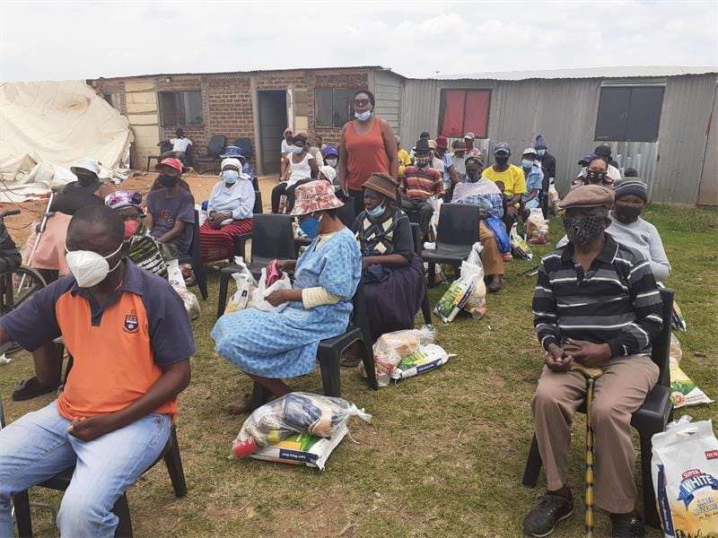

About Kwelano Bohloko
Learn more about our centre and our role in the community.

Who We Are
Kwelano Bohloko Old Age and Disability Centre is a community-focused service centre that supports older persons and people living with disabilities.
The centre aims to provide a safe, caring and supportive environment where community members can access assistance, participate in activities and remain connected with others.
We believe that every person deserves dignity, respect and an opportunity to live a meaningful life.
See what we offer on our services page, or find out how to support the centre.
Our Mission
To provide compassionate support and services that improve the well-being and dignity of older persons and people with disabilities.
Our Vision
To build a caring and inclusive community where older persons and people with disabilities are valued and supported.
Our Values
Respect, dignity, compassion, inclusion, community participation and responsible service.
Life at the Centre
Select a photo to view it larger.
Be Part of Our Community
Families, volunteers, donors and community organisations are welcome to connect with us.
Contact Us